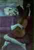
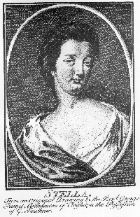

All the years combine
they melt into a dream
A broken angel sings
from a guitar
In the end there's just a song
comes crying like the wind
through all the broken dreams
and vanished years
When all the cards are down
there's nothing left to see
There's just the pavement left
and broken dreams
In the end there's still that song
comes crying like the wind
down every lonely street
that's ever been
Stella Blue
I've stayed in every blue-light cheap hotel
Can't win for trying
Dust off those rusty strings just
one more time
Gonna make em shine
It all rolls into one
and nothing comes for free
There's nothing you can hold
for very long
And when you hear that song
come crying like the wind
it seems like all this life
was just a dream
Stella Blue
Written, according to Box of Rain at the Chelsea Hotel in 1970. This places "Stella Blue" in distinguished company. It's where Arthur C. Clarke wrote 2001: a Space Odyssey; Bob Dylan wrote "Sad-Eyed Lady of the Lowlands"; and Arthur Miller wrote After the Fall. It's been home, in its hundred-year plus history (built in 1883), to Mark Twain, Sarah Bernhardt, O. Henry, Hart Crane, Nelson Algren, Willem de Kooning, Jasper Johns, Vladimir Nabokov (see note under "Stella Blue", below, for more on Nabokov), Jane Fonda, Charles Jackson, Milos Forman, Edie Sedgwick, Yevgeny Yevtushenko, Brendan Behan, Dylan Thomas, Thomas Wolfe, Edgar Lee Masters, and a slew of others. For a good article on the Chelsea, see Helen Dudar's article "It's Home Sweet Home For Geniuses, Real Or Would-Be," in The Smithsonian, December 1983, p. 94.
Recorded on
Also included on Robert Hunter's album Box of Rain. (1991)
First performance at the Hollywood Bowl on June 17, 1972. This was Pigpen's last show with the band. "Stella Blue" appeared in the first set, between "Beat It On Down the Line" and "El Paso." It has been a staple of the live repertoire ever since.
Another possibility for resonance is the Stella guitar, a make of guitar which was "particularly popular among blues players during the 1920's and 1930's." (Evans. Guitars. p. 223.) Evans notes that Leadbelly played a Stella 12-string, while Blind Blake and Blind Willie McTell also played Stellas.
The guitar-name possibility seems worth mentioning because of the lines: "A broken angel sings from a guitar," and "Dust off those rusty strings just one more time..." so that the song actually does seem to be about guitars, to some degree. Whether Stella manufactured a guitar with a blue finish is one for the guitar fanatics to figure out. It seems more likely that the color reference is to "the blues," rather than to the color of the guitar, if, indeed, it is a reference to the guitar.
This note from a reader to shed some light:
Thanks, Scott!Date: 21 Nov 95 13:08:22 PST
From: Scott Hyatt
I thought I'd pass on some of my thoughts concerning "Stella Blue".
There is a fairly famous poem by Wallace Stevens called "The Man With The Blue Guitar" which is included in many paperback anthologies of Stevens' work. It's a long poem that explores the relationship between everyday experience and imagination -- and how the artist, poet, and musician creates new forms of artistic expression by filtering day-to-day experience through the imagination. Wallace's secondary mission in the piece is to hold the "artist" up as a new kind of hero figure; an apotheosis, as it were.
The "Blue Guitarist" sometimes says things that smack very close to what Garcia & Company might have said about the creative process:
"They said 'You have a blue guitar,
You do not play things as they are.'The man replied 'Things as they are
Are changed upon the blue guitar.'"-or:
"I cannot bring the world quite round,
Although I patch it as I can."--or even still:
"To bang it from a savage blue,
Jangling the metal of the strings..."

Stevens' inspiration for the poem was one of the many artistic works that Picasso rendered concerning the guitar (Stevens said he didn't have any one in particular in mind). The most famous of course is his "Old Man With A Guitar" which, I believe, was painted during Picasso's "Blue Period" -- which is interesting in itself: Picasso's blue period occurred historically before the term "The Blues" took hold within the American lexicon -- and Picasso was living between Paris and Spain at the time. His blue period was an artistic response to his depression over a friend's suicide. --So the real crux of the biscuit as far as how all this refers back to "Stella Blue" would seem to me to find out what the connection is between the color blue and depression -- which is where the "speaker" in "Stella Blue" seems to be coming from.As far as line "Blue light cheap hotels" there's the old Stephen Crane story "The Blue Hotel". There's also a tune by Chris Isaac's called "Blue Hotel".
Hope this helps...
On the surface, Stella Blue sounds like a name of a woman, or the nickname of a woman. The most famous Stella in American literature must be Tennessee Williams' character in "Streetcar Named Desire," whose name is shouted, in a famous and all-too-easily imitated scene, by Marlon Brando in the film version.
However, there is a character in Vladimir Nabokov's novel Pale Fire (1962) named Stella Blue. In the "Commentary" portion of the novel, in the note to line 627, which discusses the "great Starover Blue," and astronomer, Nabokov writes:
"The star over the blue eminently suits an astronomer though actually neither his first nor second name bears any relation to the celestial vault: the first was given him in memory of his grandfather, a Russian starover ..., that is, Old Believer (member of a schismatic sect), named Sinyavin, fromsiniy, Russ. "Blue." This Sinyavin migrated from Saratov to Seattle and begot a son who eventually changed his name to Blue and married Stella Lazurchik, an Americanized Kashube." (p. 236)
Additionally, there are two very famous Stellas in English literature, both pseudonymous names for actual women in the lives of the poets who addressed them, Sir Philip Sidney and Jonathan Swift.
Sidney's Stella was celebrated in his sonnet sequence "Astrophel and Stella," and the real-life Stella was Lady Penelope Devereux.

(Swift's Stella. Frontispiece "From an original drawing by the Rev George Parnel..." from Stella' Birth-Days: Poems by Joanathan Swift. Edited with a commentary by Sybil Le Brocquy. Dolmen editions, 1967)Swift's Stella, in real life, was Esther Johnson.
This provides an opportunity for us to speculate on Hunter's use of women's names, particularly since at least one other name, "Althea,", was also used as a pseudonymous address, this time by the seventeenth century poet Richard Lovelace.
"Of restless nights in one-night cheap hotels..."If Hunter is echoing Eliot here, it is another tie to "Dark Star," since "Prufrock's" opening line, "let us go then, you and I..." is echoed in "Dark Star's" chorus: "Shall we go, you and I while we can..."
The reference to "blue lights" in connection with a hotel is kind of puzzling. "Red lights" would make perfect sense. There is a tie-in with Pigpen's "Operator"-- "working in a house of blue lights," which in turn seems to take its cue from the 1947 song "House of Blue Lights" (words and music by Freddie Slack and Don Raye). The "house of blue lights" seems to be a dance hall in this context. But what this might signify, other than a straightforward relationship back to the "blue star" of the title, is unknown. Any ideas greatly appreciated, as always.
Subject: More on "Stella Blue"
Date: 24 Jun 96 09:24:29 PDT
From: Scott.Hyatt@directory.Reed.EDU (Scott Hyatt)
Hi David,
Quite by circumlocution, your link to J.L. Morton's "Color Matter's" page for the line "Dressed myself in green" in the tune "Bertha" got me thinking again about the connection between the color blue and depression that I wrote about (and you included) in the notes to "Stella Blue". Anyway, I wrote to Dr. Morton asking her for any insights into this link and she responded:
> "I might suggest that there is a psycho/physiological link. Psychologically, blue relaxes the mind. However, after ten minutes of treatment with blue rays, most people tire and begin to feel depressed. Color is electromagnetic energy and affects the hypothalmus gland. Blood pressure, respiratory rate, pulse, appetite, and mood are altered by the presence of large quantities of specific colors or colored rays."If you're interested in including this in "Stella" let me know. I'll be happy to write Dr. Morton back for permission to quote her...[Permission was granted by Dr. Morton.--dd]
And another note from Scott:
Subject: More for Stella Blue
Date: 11 Oct 96 17:43:10 PDT
From: Scott.Hyatt@directory.Reed.EDU (Scott Hyatt)Hi David,
Thanks for putting me on your email list. I've got a few more items for your "Stella Blue" entry if you're interested in them. By the way, I hope you don't think I'm obsessed with this song -- it's just that I keep running across things that seem to relate. In reality I hardly ever listen to "Wake of the Flood" and lately I've been listening to guys like Blind Willie Johnson and Leadbelly pretty much exclusively.
Which brings me to what I've found: I'm in the process of reading through Charles Wolfe and Kip Lornel's book The Life and Legend of Leadbelly. In an early chapter the authors provide a little history into the origins of the Stella guitar (which, as your page informs, was Leadbelly's main axe. "Stella" was one model of a series of guitars manufactured by the Oscar Schmit Company which was located at 87 Ferry Street in (of all places) Jersey City, New Jersey. The company was established "sometime between 1879 and 1893" and incorported in 1911. Apparently, Stellas weren't considered to be very good instruments--definately not in the same league as a Martin or Gibson from that period. As the authors explain:
"They were not especially durable, and they suffered from an interior finishing that was, in the words of one historian, 'crude and hastily completed'. The exteriors looked good though; they were done in Honduran mahogany for the sides and back, and German spruce for the flat top. The tough bridges were made of rosewood, but the fretboard was usually constructed of birch or maple that had been stained or painted black (which eventually caused rot)." (p. 50)--But Stellas sounded great--a lot better than they should have. This coupled with their relatively inexpensive price (about $15 new!) made them very attractive to bluesmen who didn't have alot of money. Their big downside was that they simply didn't last very long; poor construction caused them to fall apart after a few decades. Apparently only a few have survived.One Stella that did survive was Leadbelly's (he actually owned a number of them during his career). It's now a part of the permanent collection of guitars on display in the Rock & Roll Hall of Fame in Cleveland. There's a nice photo of Leadbelly's Stella on one of the last pages of George Gruhn's book Acoustic Guitars & Other Fretted Instruments. If you listen to any of those old Leadbelly recordings you can really see why Stellas were so popular: they've got a loud, powerful sound. Their big boxes push a lot of air--perfect for being heard over the noise in a juke joint or on a street corner.
The guitar/woman double meaning in "Stella Blue" is historically interesting as well. Leadbelly affectionately referred to his 12-string as "Stella" (and where would B.B King be without "Lucille"?). The shape of the guitar itself is often considered feminine in form--I remember seeing a surrealist painting depicting the subject of George Harrison's song "While My Guitar Gently Weeps" as a guitar which has metamorphosized into a woman. There's also a link between guitar playing ability and sexual prowess. In the lexicon of the early bluemen, the guitar was sometimes referred to as an "easy rider"--but this term also refers to a woman who is a willing and eager sexual partner. There are all kinds of "rider" songs in the canon of the blues ("I Know You Rider" is one of them). If a guitar plays and sounds well it'll be "easy" for the bluesman to show his stuff and impress an audience. Wolfe and Lornell relate a story of Leadbelly's where he tells why he switched to a 12-string guitar: he wouldn't run out of strings as fast when the proximity of an attractive woman caused him to break them. For better or worse this sentiment seems to have very much survived down to the present (see any music videos lately?). Just exactly how many teenaged male garage bands get started to impress girls is hard to say...
As far as "Dust[ing] off those rusty strings" is concerned, history has pretty much forgotten how important the advent of the steel guitar string was to the development of popular music. Before the 20th century, the guitar was a polite parlor instrument strung with gut. And even in the early decades of this century, the guitar was nothing compared to the banjo and mandolin (which were steel stringed instruments) as far as popularity. It wasn't until the bluesmen came along and started experimenting with steel strings on guitars that a particular sound was born. Steel gave the guitar a brighter and louder sound. According to Wolfe and Lornel "...the use of steel strings probably came into Texas and Louisiana from Mexico, and it is quite likely that blacks in the area had been experimenting with them long before the guitar makers began to switch over to them" (p. 51).
--Hope you can use this,
Scott Hyatt
Reed College
Portland, OR
scott.hyatt@reed.edu